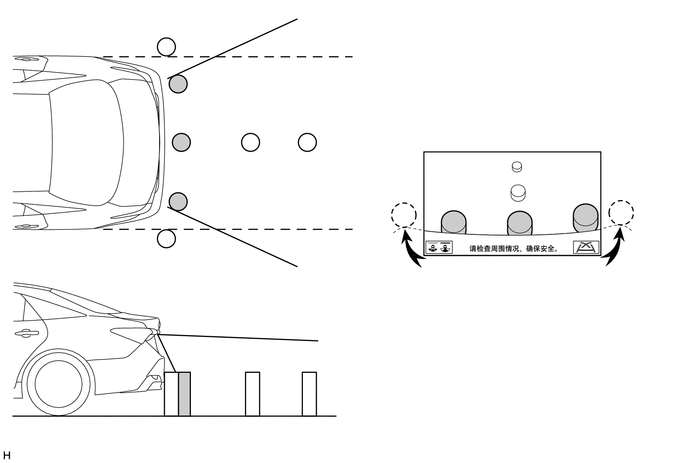
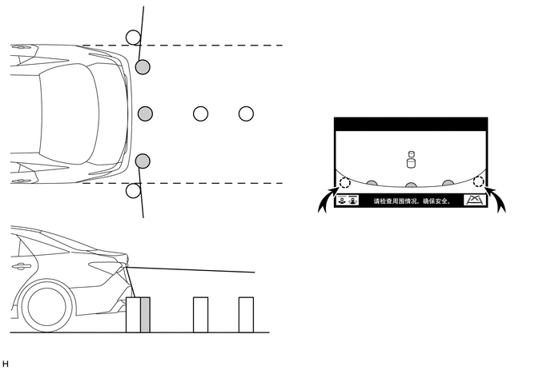

主要零部件的功能
| 零部件 | 功能 |
|---|---|
| 后电视摄像机总成 | ·
拍摄车辆后方区域的图像。 ·
根据来自转向传感器的信号计算的驻车辅助引导线与拍摄的图像重叠。然后，将图像作为视频信号发送至收音机和显示屏接收器总成。 ·
行李箱门打开时，取消驻车辅助引导线的叠加，仅将拍摄的图像作为视频信号发送。 |
| 收音机和显示屏接收器总成 | ·
接收来自后电视摄像机总成的由车辆后方图像和驻车辅助引导线组成的视频信号，并将其显示。 ·
将指示驻车引导线显示功能模式改变的信号发送至后电视摄像机总成。 |
| 转向传感器 | 检测方向盘的角度并将结果信号发送至后电视摄像机总成。 |
| 换档杆位置传感器 | 将换档杆 R 位置信号发送至混合动力车辆控制 ECU 总成。 |
| 混合动力车辆控制 ECU | 将换档杆 R 位置信号发送至后电视摄像机总成。 |
| 行李箱门锁总成
·
行李箱门控灯开关 |
将行李厢门控灯开关信号发送至主车身 ECU（多路网络车身 ECU）。 |
| 主车身 ECU（多路网络车身 ECU） | 将行李箱门控灯开关信号发送至后电视摄像机总成。 |
系统控制
满足以下条件时，驻车辅助监视系统工作：
电源开关置于 ON (IG) 位置。
换档杆置于 R。
功能
屏幕上显示的区域
车辆右方的物体显示在显示面板右侧，车辆左方的物体显示在显示面板左侧。
后电视摄像机总成采用广角镜头。从显示在屏幕上的图像所感测到的距离与实际距离有所不同。

所示插图仅为示例。插图可能与实际车辆画面有所不同。

所示插图仅为示例。插图可能与实际车辆画面有所不同。
屏幕上显示的区域可能随车辆状态或路况的不同而变化。后电视摄像机总成覆盖的区域有限。后电视摄像机总成无法显示贴近保险杠任一角的物体或保险杠下方的区域。
警告信息
下列情况下，警告信息显示在屏幕底部。显示的警告信息语言与多功能显示屏语言转换开关所选的语言相同。
| 警告信息 | 条件 |
|---|---|
| Check surroundings for safety.（检查周围环境以确保安全。） | 系统工作过程中通常显示此信息。 |
更换下列零件时的校准
满足以下任一条件时，都必须调节下列项目。有关详情，请参考修理手册。
| 调节项目 | 条件 |
|---|---|
| 存储器中的转向中心点 | 不显示估算路径引导线。 |
| 转向角设定 | ·
拆下并安装螺旋电缆分总成或转向传感器后，或断开并重新连接连接器后，将显示系统初始化。 ·
更换转向传感器。 |
| 倒车摄像机位置设定 | ·
由于更换悬架零件或轮胎使车辆高度发生变化。 ·
后电视摄像机总成安装角度已改变。 |
| 驻车辅助监视系统初始化 | 更换后电视摄像机总成。 |
失效保护
下表指示了该系统中零部件的故障检测项目。
| 故障零件 | 检测项目 | 功能 |
|---|---|---|
| 后电视摄像机总成 | 检测到摄像机故障信号 | 停止系统工作并显示黑屏 |
| 转向传感器 | ·
检测到传感器故障 ·
检测到传感器断路信号 ·
转向传感器和后电视摄像机总成之间的通信故障 |
停止系统操作 |
| 检测到中性转向点校正不完整信号 | ||
| 收音机和显示屏接收器总成 | 收音机和显示屏接收器总成故障 |
诊断
收音机和显示屏接收器总成配备有诊断功能，可以显示驻车辅助监视系统诊断菜单。进入诊断菜单画面的方法与多功能显示屏的使用方法相同。有关详情，请参考修理手册。